4 Point Patterns
4.1 Big Idea
Space matters: Spatial pattern lets us understand process. That is, knowing where samples come from is the first step to understanding the underlying mechanisms.
We can quantify the pattern of points themselves or in the presence of an explanatory variable.
4.2 Reading
Read chapter 7 in Bivand’s book up to section 7.5. Also start reading through Fortin et al. (2016) as a great overall short chapter on spatial analysis. Don’t worry about some of the details in there yet. We will revisit as we go along.
Bivand R (2008) Spatial Point Pattern Analysis. In: Applied Spatial Data Analysis with R. Use R!. Springer, New York, NY.
Fortin, M.J., Dale, M.R. and Ver Hoef, J.M. (2016). Spatial Analysis in Ecology. In Wiley StatsRef: Statistics Reference Online (eds N. Balakrishnan, T. Colton, B. Everitt, W. Piegorsch, F. Ruggeri and J.L. Teugels). doi:10.1002/9781118445112.stat07766
4.3 Packages
We will use spatstat(Baddeley, Turner, and Rubak 2026) for point pattern analysis and I’ve thrown in some tidyverse(Wickham 2023) syntax as well.
4.4 Point Patterns
Point pattern analysis (PPA) is the study of the spatial arrangements of points in space. It fundamentally deals with whether or not points are randomly distributed, clumped, or repulsed from each other.
PPA doesn’t require any other measurement besides the location of points. The easiest way to think about this is to imagine a scatter plot of the points – i.e., a simple point map of the locations. Quantifying the pattern of these points is the goal of the analysis and we do so over the boundary of the data which is called the bounding box, or the convex hull of the points.
What we want to know is whether a bunch of points are randomly arranged or if they have some kind of spatial structure. We call a random pattern complete spatial randomness (CSR) and model it as a Poisson point process (which has convenient mathematical properties discussed in the reading). If a pattern doesn’t look like CSR we are generally interested in whether the points are clumped or repulsed. But we can’t just eyeball it – brains make patterns where there are none. Thus, we’ll look at two methods for determining CSR: kernel estimation and Ripley’s K. As always we hope to make inference about process (e.g., contagion or competition) by understanding pattern.
Point patterns are a very simple form of spatial analysis but can really make clear concepts like clustering and uniformity.
4.4.1 Simulated Example
Let’s illustrate. I’ll generate four maps. Each has 100 points. Your job is to figure out if the pattern is: random, clumped (clustered), or uniform (repulsed). Note that the code that goes into making these patterns is using random normal or random uniform distributions to accomplish this. I often simulate patterns in data that I know exist and then see if I can detect them using some method. In fact, we will do a lot of this during class. If you look at simDat below you’ll see that it is four data.frame objects bound together. Each one shows a different pattern. Don’t worry if you don’t understand all the code that makes up simDat. I’ll walk through it online.
n <- 100
patternA <- data.frame(x=rnorm(n),y=rnorm(n),id="A")
patternB <- data.frame(x=runif(n),y=runif(n),id="B")
patternC <- data.frame(expand.grid(x = seq(0, 1, length.out = sqrt(n)),
y = seq(0, 1, length.out = sqrt(n))),
id="C")
patternD <- data.frame(expand.grid(x = rep(seq(0, 1, length.out = n/20),2),
y = rep(seq(0, 1, length.out = n/20),2)),
id="D")
patternD$x <- jitter(patternD$x)
patternD$y <- jitter(patternD$y)
simDat <- bind_rows(patternA,patternB,patternC,patternD)
simDat <- simDat %>% group_by(id) %>%
mutate(x = scales::rescale(x),
y=scales::rescale(y))
ggplot(simDat,aes(x=x,y=y)) +
geom_point() + coord_fixed() +
facet_wrap(~id)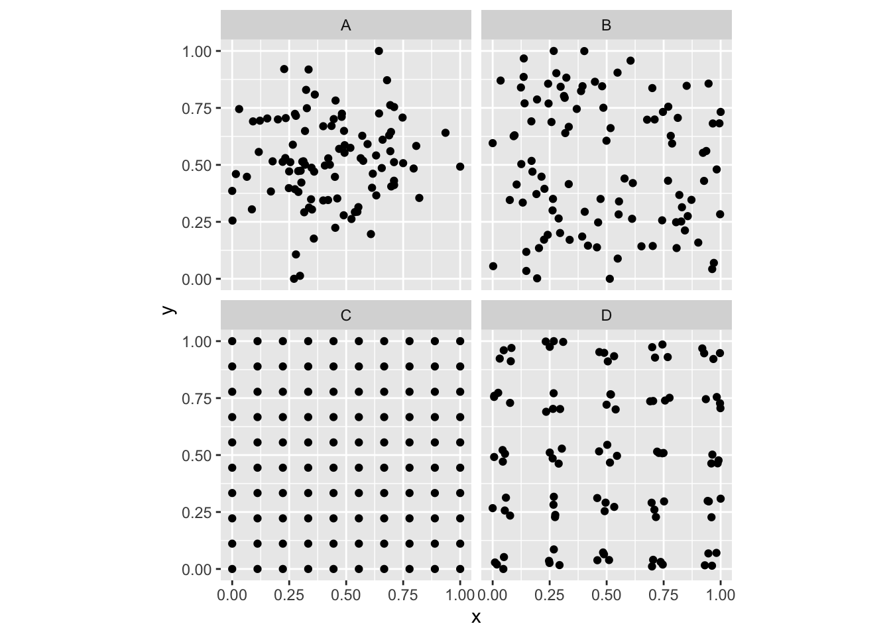
So, looking at the various plots, can you classify them? E.g., are the points random? Are they clustered? Are they repulsed? Or perhaps both?
4.4.2 Data
Plant ecologists (and astronomers and cell biologists) love point patterns. Tree stem locations are ideal data for exploring spatial patterns. We’ll look at three different data sets of tree locations. When you load the data below make sure to summarize, look at str of the objects, and plot them. Note that all of these are ppp objects. The spatstat package uses the ppp class as a handy way of storing this type of spatial data. We will use it here and we could certainly convert other spatial data (e.g., shp files) to ppp objects as needed.
Below we will look at data using the japanesepines, redwood, and bei data sets. You should look at the help file for each, e.g., ?japanesepines, to learn more.
## Planar point pattern: 65 points
## Average intensity 65 points per square unit (one unit = 5.7 metres)
##
## Coordinates are given to 2 decimal places
## i.e. rounded to the nearest multiple of 0.01 units (one unit = 5.7 metres)
##
## Window: rectangle = [0, 1] x [0, 1] units
## Window area = 1 square unit
## Unit of length: 5.7 metres## Planar point pattern: 62 points
## Average intensity 62 points per square unit
##
## Coordinates are given to 3 decimal places
## i.e. rounded to the nearest multiple of 0.001 units
##
## Window: rectangle = [0, 1] x [-1, 0] units
## (1 x 1 units)
## Window area = 1 square unit## Planar point pattern: 3604 points
## Average intensity 0.007208 points per square metre
##
## Coordinates are given to 1 decimal place
## i.e. rounded to the nearest multiple of 0.1 metres
##
## Window: rectangle = [0, 1000] x [0, 500] metres
## Window area = 5e+05 square metres
## Unit of length: 1 metre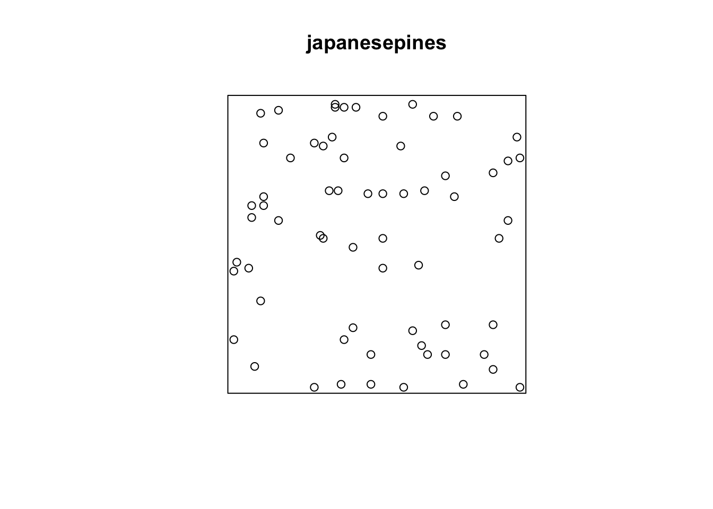

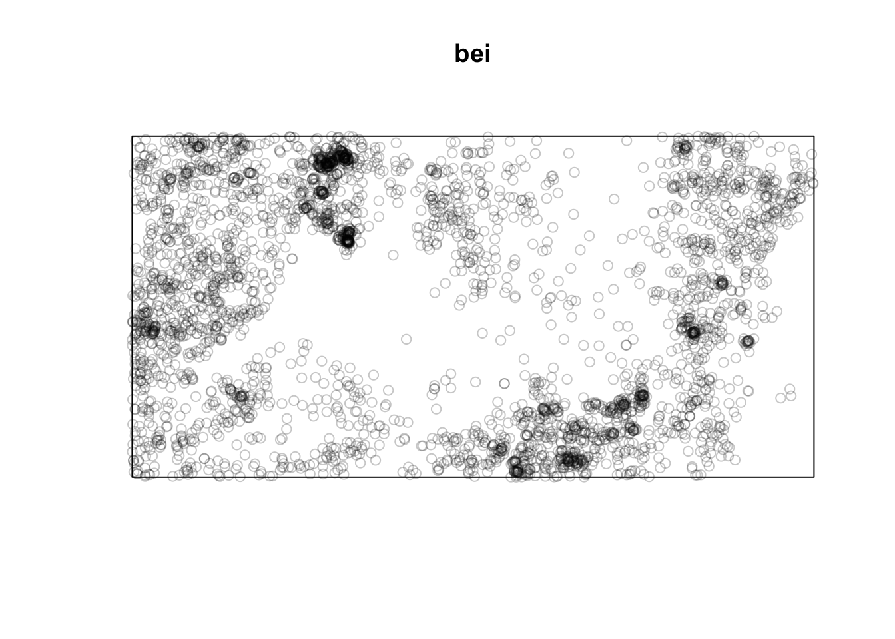
Note that the units on these data are not the same. The japanesepines data are measured where one unit equals 5.7 meters, redwood is unitless (re-scaled at some point to an xy grid ranging from 0,1), bei is actually in meters in a 1000x500m bounding box. This doesn’t really matter when we interpret each data set on its own, but we should keep it in mind when comparing numbers down below.
Note also that I’m using the plot function to show the point data. E.g., plot(japanesepines). Because japanesepines is class ppp, the generic function plot.ppp is being used with the authors of spatstat having made the visualization choices for you. If you are a die hard ggplot enthusiast you can figure out how to make your own plot using ggplot. E.g., you can get the units right and geek out on this as much as you like by looking at the plumbing of the japanesepines object which is a list. I’m not suggesting you do this. But I know many of you take your data viz seriously and might be offended by the default plots.
tibble(x=japanesepines$x * japanesepines$window$units$multiplier,
y=japanesepines$y * japanesepines$window$units$multiplier) %>%
ggplot(mapping = aes(x=x,y=y)) +
geom_point() +
labs(x=paste("x (",
japanesepines$window$units$plural,
")",sep=""),
y=paste("y (",
japanesepines$window$units$plural,
")",sep="")) +
coord_fixed() + theme_minimal()
4.4.3 Kernel Density Estimation
One way of looking for patterns with points is visually. We can do this in an intuitive way by smoothing the data by applying a kernel density estimation (KDE). KDE is a non-parametric method for estimating the probability density function of a variable. Try this for an idea of what we are going to do with spatial data:

Or for ggplot folks. I’ll stop doing the double plotting now but want to make everybody aware that you can plot any way you choose.
ggplot() +
geom_histogram(mapping = aes(x=x,after_stat(density)),fill="grey") +
geom_density(mapping = aes(x=x))## `stat_bin()` using `bins = 30`. Pick better value `binwidth`.
Ok. What is this? We took n random points (n=100from above) and estimated the probability density function with a kernel. Kernel density estimation is a basic data-smoothing technique and the density estimates are closely related to histograms as you can tell.
The key to using kernels is selecting the bandwidth. The bandwidth of the kernel is a parameter which indicates the degree of smoothing. When we plot a histogram, we need to consider how many bins to break the data into. Choosing the bandwidth of the kernel is a Goldilocks problem. We want one that is just right. Too small and your kernel is spiky (not enough smoothing) and too big leads to over smoothing. There is no perfect answer for how smooth to make your kernel, although there is much gnashing of teeth about getting a “good” answer.
With point patterns we basically want to plot the x data and the y data against each other and look for patterns in the intensity of the points. Let’s leave the bandwidth issue alone for now and look at some plots.
## real-valued pixel image
## 128 x 128 pixel array (ny, nx)
## enclosing rectangle: [0, 1] x [0, 1] units (one unit = 5.7 metres)
## dimensions of each pixel: 0.00781 x 0.0078125 units
## (one unit = 5.7 metres)
## Image is defined on the full rectangular grid
## Frame area = 1 square units
## Pixel values
## range = [25.17565, 133.178]
## integral = 63.61766
## mean = 63.61766This density object (class density.ppp) has methods for summary, plot, contour and persp. E.g., here is a perspective plot:
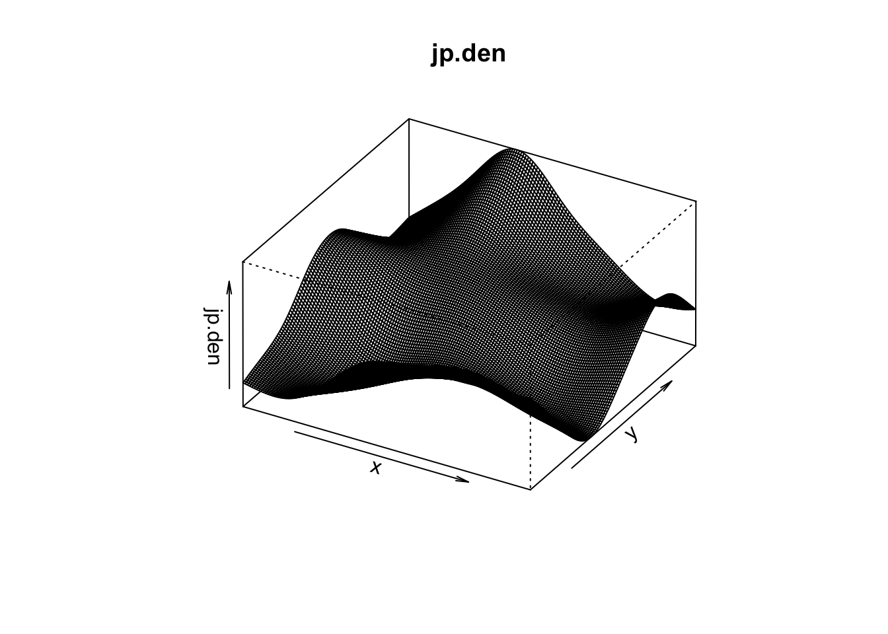
You can add contour lines and even the add points back in after you plot the KDE and gander at it:

You can run the same for the others too:


These are plots of the intensity of the points. They show the expected density and thus the units are points per unit area. If the plot surface has peaks it means that intensity is a function of spatial location. This is a non-parametric estimate and the function above density.ppp selects the bandwidth of the kernel for you. If you want to look at different bandwidths change the argument sigma. For instance try values of 0.1, 1, 10 like so plot(density(bei,sigma=10)).
There are ways of parametrically estimating the intensity of a point pattern by identifying the specific function for the intensity with parameters fit by maximum likelihood estimation. In practice, I’ve never seen this done but rather see people using kernels to get a feel for the order in the pattern. So what can we see in the above figures? Which patterns look random, which look clumped?
4.5 Ripley’s K
The kernel approach is pretty and mucking about with the bandwidth gives you an idea as to what distances are important in driving pattern. But it would be nice to quantify at what distances a point pattern conforms to, or deviates from, CSR. The reading describes at least three ways of quantifying whether a pattern fits CSR at a given distance. These include the \(\hat{G}\) function (which measures the distance to the nearest event) and \(\hat{F}\) function (which measures the distance from a point to the nearest event) but we are going to use the Cadillac of point pattern tools: Ripley’s K. Ripley’s K is a statistic for detecting deviations from spatial homogeneity. Its estimate is:
\[\hat{K}(r)=\lambda^{-1} \sum_{i \neq j} I(d_{ij}<r)/n\]
where \(d_{ij}\) is the distance between points \(i\) and \(j\), \(n\) is the number of points, \(r\) is a radius, \(\lambda\) is the mean density of points, and \(I\) is the indicator (aka characteristic) function that has a value of one if its operand is true and zero otherwise. The \(K\) function measures the number of events found up to a given distance (\(r\)).
Ripley’s K describes the point processes at many distance scales. This is an attractive property of the statistic because many environmental point patterns can cluster at one distance and become random or uniform at another.
We can test \(\hat{K}\) against CSR which has a value of \(K(r)=\pi r^2\) for a homogeneous Poisson process. Furthermore, we can calculate an envelope of possible values of \(K(r)\) in a Monte Carlo framework where the number of simulations specifies the significance level as \(\alpha = 2/(1 + n)\) where \(n\) is the number of simulations. If the observed function value lies outside the envelope we can reject the null hypothesis of CSR at the distance \(r\).
The envelope function is chatty by default and prints out information on the simulations as it runs them. In the code chunk below I’ll quiet it down by setting the argument verbose=FALSE. If you leave it as the default value of TRUE, the markdown doc gets messy.
n <- 100
japanesepinesK <- envelope(japanesepines, fun = Kest, nsim = n, verbose=FALSE)
beiK <- envelope(bei, fun = Kest, nsim = n, verbose=FALSE)
redwoodK <- envelope(redwood, fun = Kest, nsim = n, verbose=FALSE)Plot the \(K\) functions one by one:

Here we see the observed \(\hat{K}(r)\) function within the envelope. This means the data follow CSR at every distance.
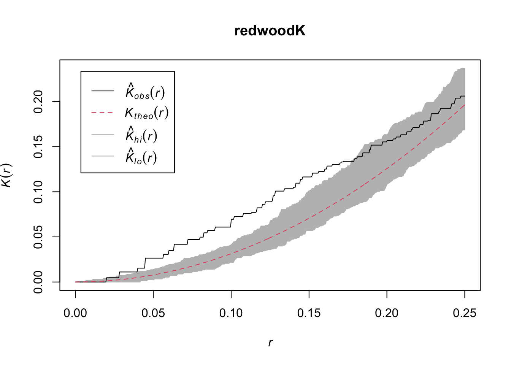
The redwoods show clumping at shorter distances and then randomness at longer distances.
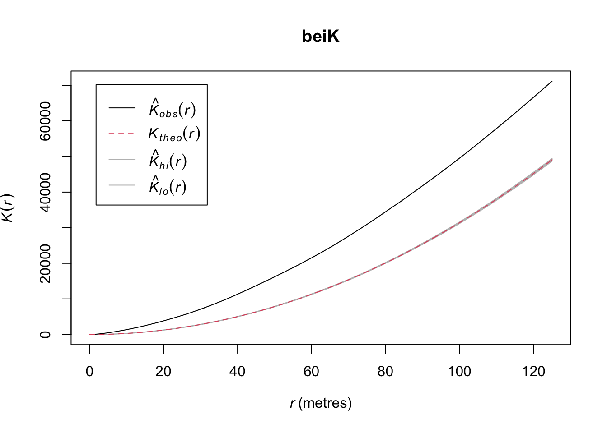
This shows intense clumping at all distances.
Thus, the japanesepines are randomly distributed while the other two are clumped but in different ways. The redwood data are clumped out to a radius of a fifth of the bounding box while the bei data are clustered out as far as we can measure. Oh, and how far can we measure before running into edge effects?
4.5.1 Distances and edges
Edge effects are a perennial problem is spatial analysis. We will talk about them more as the quarter progresses but the question always nags at us: what’s over the edge of the map? Edge effects arise because points outside the boundary can’t be counted, right? And points near the edge have to be down weighted in some way because we have less information about them. When we do distance-based analysis we have to be conservative about edges and there are two conceptual ways of thinking about this. One, we can limit our analysis to short distances to reduce the number of edge cases. Two, we can try to correct for the edge effects.
Look back the x-axis of the plots of \(\hat K\) above. Note that the distances are much shorter than the span of the original data. Both the japanesepines and the redwood data are stored with the coordinate data on a scale from 0 to 1 (but the japanesepines data are on a 5.7 x 5.7 m square as discussed above) and the bei data are in a 1000 x 500 m rectangle. The plots above truncate at distances of 1/4 the shortest span of the data. This is a default in spatstat and fairly conservative. We can override that using the rmax argument. E.g., we can look at distances up to 50% of the study area.
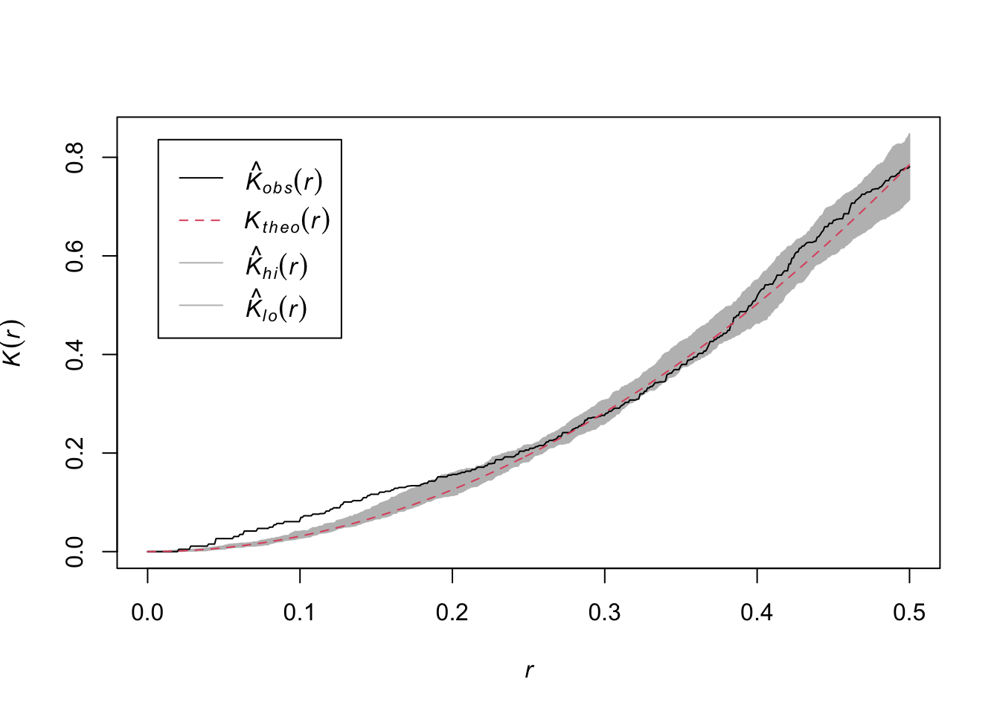
Is this reasonable or responsible? Ripley himself suggested the rule of 0.25 the short span of the data. There are discussions about other approaches in the literature but they are beyond the scope of this class.
The other way of being careful about edges is to “correct” for the effect. These are similarly tough reading. I remember slogging through Goreaud’s 1999 paper which came out the year I took spatial analysis when I was a master’s student. For this class I think it’s enough to be aware that there are several different edge corrections out there. The Bivand reading walks through one of them and you can certainly read more as you desire.
japanesepinesK2 <- Kest(japanesepines, verbose=FALSE,
correction=c("none","isotropic","border"))
plot(japanesepinesK2)
4.5.2 L hat
I’ve dragged you through \(\hat K\) and the plots above and now I’m going to tell you that I’m not a fan of the way the \(\hat K(r)\) as a function of \(r\) looks. I think they are hard to interpret because the random expectation is non-linear and that is hard to visualize. I prefer looking them transformed so that the y-axis and x-axis are on a 1:1 scale. This is referred to as \(L\) and is a simple transformation of the \(K\) function:
\[L(r) = \sqrt{(K(r)/\pi} \]
This has the effect that for a a completely random point pattern, the theoretical value of \(L(r)=r\). We can calculate it using Lest rather than Kest.
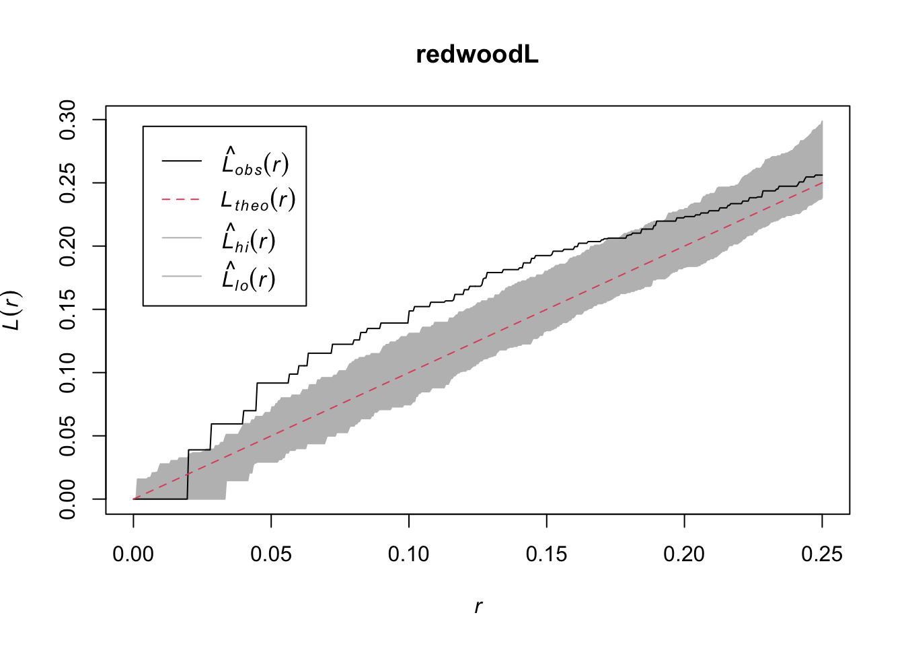
Bivand goes the extra step (e.g., Fig 7.9) of plotting \(\hat K(r) - \pi r^2\) on the y-axis to make the theoretical expectation be zero at every distance. I’ll take a crack at it using ggplot because I’m that kind of geek. Since redwoodK is a data.frame this is pretty simple.
ggplot(redwoodK, mapping = aes(x=r, ymin = lo-pi*r^2, ymax=hi-pi*r^2)) +
geom_ribbon(fill="grey",alpha=0.5) +
geom_line(mapping = aes(y=theo-pi*r^2),col="red", linetype="dashed") +
geom_line(mapping = aes(y=obs-pi*r^2)) +
labs(y=expression(K(r) - pi~r^2), x = "r") +
scale_x_continuous(expand = c(0,0))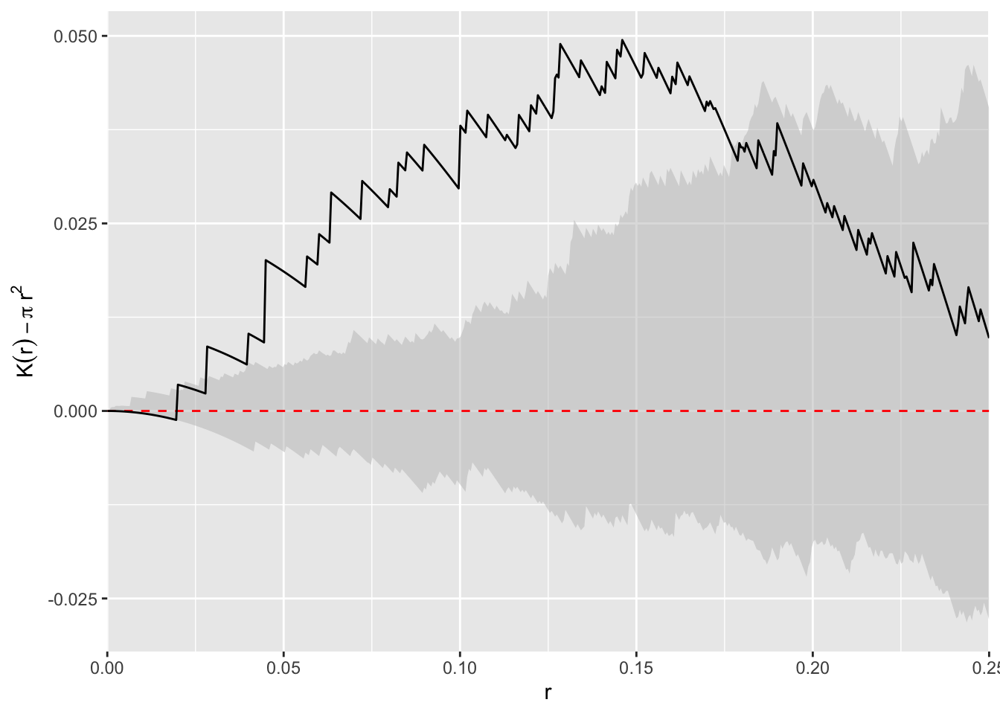
I find this plot to be the simplest to interpret (it’s also the way I was taught which influences that probably), the \(L\) function next, and the raw \(K\) function the hardest. But I tend to use \(L\) plots because they are bundled in spatstat and redoing all the plots takes more work.
4.5.3 Marked point patterns
Let’s look at something a little more subtle and interesting. The longleaf data are what is called a marked point pattern. This means that we know something else about a point besides its location. In this case we know the diameter of each stem. You can do some more interesting things with marked point patterns.
The longleaf data are a marked point pattern meaning that we have some other information on the points besides their locations. In this case we have the diameters of the trees at breast height (DBH=1.4m above ground) which is standard measure in forestry. These are stored as marks in the longleaf object. Again, look at the help file: ?longleaf.
## Marked planar point pattern: 584 points
## Average intensity 0.0146 points per square metre
##
## Coordinates are given to 1 decimal place
## i.e. rounded to the nearest multiple of 0.1 metres
##
## marks are numeric, of type 'double'
## Summary:
## Min. 1st Qu. Median Mean 3rd Qu. Max.
## 2.00 9.10 26.15 26.84 42.12 75.90
##
## Window: rectangle = [0, 200] x [0, 200] metres
## Window area = 40000 square metres
## Unit of length: 1 metre
Note in the plot that the points are sized according to their diameter. We can look at the diameters of all the trees. E.g.,

Let’s examine the spatial pattern of just the big trees (DBH > 50cm) which is moderately big for a Longleaf pine.
bigTrees <- subset(longleaf, marks > 50)
plot(envelope(bigTrees, fun = Lest, nsim = n, verbose=FALSE),
main = "Big Trees")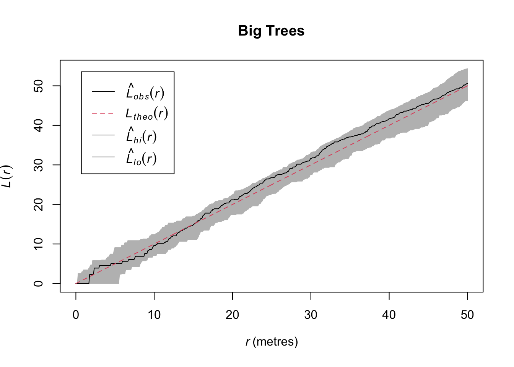
So in contrast to the whole data set, we see that while the entire data set shows clustering, the big trees show CSR. That’s kind of cool. We could start speculating about what ecological processes might drive that pattern.
Standard practice in forestry is to consider trees as adults when they have diameters of 30cm of greater. Let’s see if our understanding of the point patterns change by age class.
First, we will make a new object that creates categories (factor) from the continuous (numeric) size class of DBH using the cut function:
## Marked planar point pattern: 584 points
## Average intensity 0.0146 points per square metre
##
## Coordinates are given to 1 decimal place
## i.e. rounded to the nearest multiple of 0.1 metres
##
## Multitype:
## frequency proportion intensity
## Sapling 313 0.5359589 0.007825
## Adult 271 0.4640411 0.006775
##
## Window: rectangle = [0, 200] x [0, 200] metres
## Window area = 40000 square metres
## Unit of length: 1 metre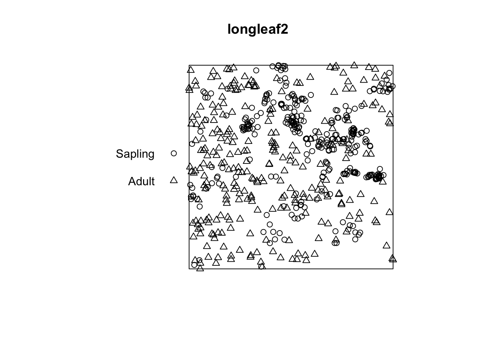
I think by looking at that plot that the adults are clustered and the saplings even more so. Let’s investigate:
adults <- subset(longleaf2, marks == "Adult",drop=TRUE)
plot(envelope(adults, fun = Lest, verbose=FALSE), main="Adult")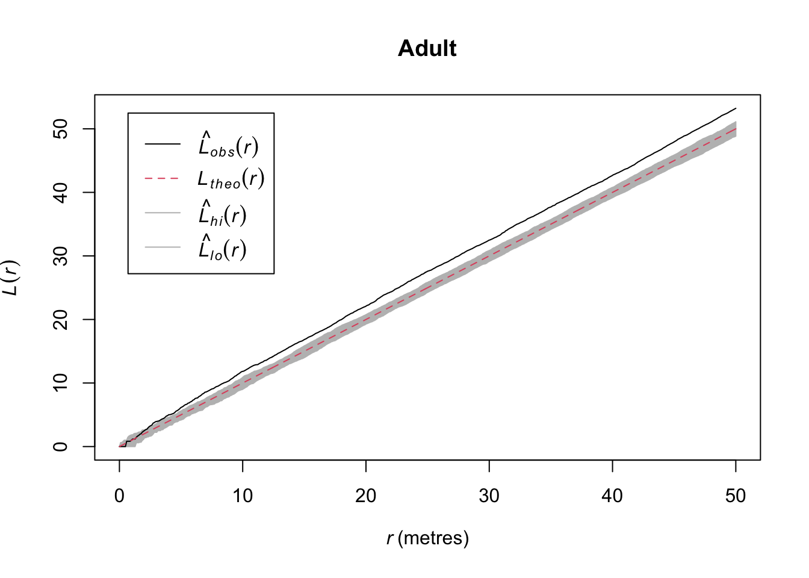
saplings <- subset(longleaf2, marks == "Sapling",drop=TRUE)
plot(envelope(saplings, fun = Lest, verbose=FALSE), main="Sapling")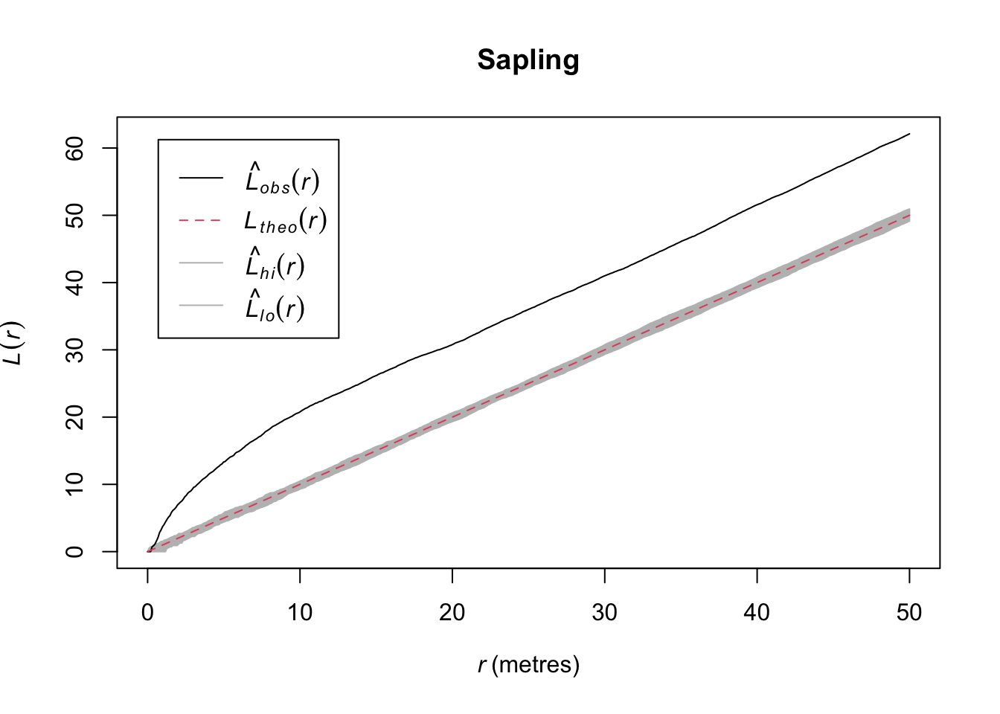
Quick aside, note that we were actually calling subset.ppp and cut.ppp above because the class ppp has methods for subset and cut.
In the plotted L functions above we definitely see that both age classes are clustered and the saplings much more so than the adults. But looking at the map I think we should see how those age classes interact. Because it looks to me like they are in different places. Let’s plot the density map of the adults and put the points where the sapling occur on top.

That is fascinating. Is it possible that the two age classes are repelled from each other?
longleaf2L <- envelope(longleaf2, "Lcross",
i ="Sapling",j = "Adult",
verbose=FALSE)
plot(longleaf2L)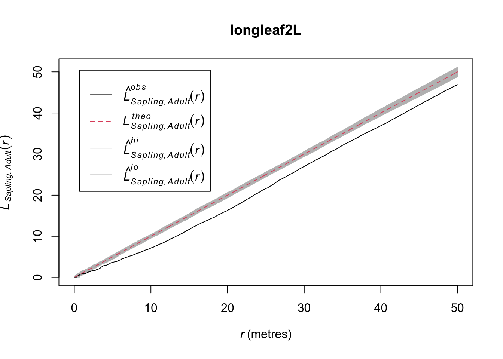
This shows the cross L-function between saplings and adults – the L-function is based on distances from points from one age class to points from the other class. Thus the plot shows the L-function for saplings to adult pairs.This suggests that while there is within class attraction (the clustering seen previously), there is between class repulsion (inhibition). Can you put on your ecologist hat and figure out why this might be happening?
4.6 Roll your own
You can create your own point pattern by clicking on the screen and then plotting the kernel density and Ripley’s K (or L). Do this several times and make different types of patterns (uniform, clumped, CSR). This is a fascinating exercise because it gives you a good idea of what CSR looks like in practice.
foo <- clickppp(n = 50) # 50 points
# KDE
plot(density(foo))
points(foo,pch=20)
# L
env <- envelope(foo, Lest, nsim = 100)
plot(env)Note that you can just do this on your own. No need to show me in your assignment. To put this part of “Your Work” into a R Markdown doc for me to see would take some work because the clickppp function is interactive. You’d have to make foo by clicking and then save it using something like saveRDS and then reading it in for your R Markdown doc with readRDS. It’s overkill to do that amount of work. So just do this on your own.
4.7 More than trees
The spatstat library has a ludicrous number of data sets to work with. If you are not interested in trees for some reason (weird, I know) you can look at point patterns for all kinds of things: anemones, ants, gorilla nests, mycorrhizal fungi, waterstriders. Type demo(data) at the prompt to see all the spatstat data sets if you want to get an appreciation for all the different types of point pattern data that exist in spatstat.
Note the 3d data as well as the linear and dendritic point pattern data. We aren’t going to use these in this class but I want you to know they exist.
4.8 Your Work
4.8.1 Simulated data
I’m going to create a point pattern object (class ppp) from the “D” pattern in simDat above. I gave it units of kilometers but they could be anything you like (“feet”, “furlongs”, etc.). Anticipate what the L (or K) function will look like for this point pattern and then plot it. Is it what you thought it would look like? Go ahead and look at other patterns (e.g., Is “B” different from “C”?).
4.8.2 Mycorrhizal fungi
Let’s look at an example of three species of ectomycorrhizae distributed around a tree.
Here are three of the beauties.
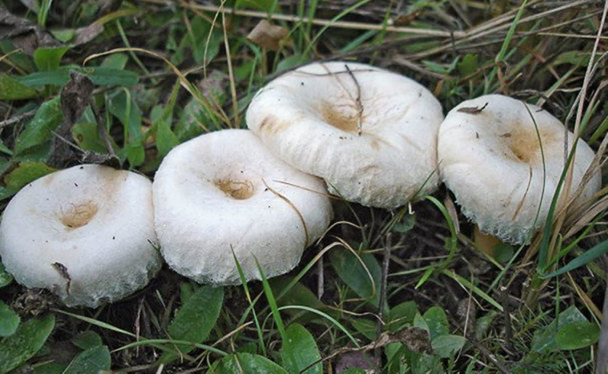 |
||
|---|---|---|
| Hebloma crustuliniforme | Lactarius laccata | Lactarius pubescens |
## Marked planar point pattern: 330 points
## Average intensity 0.004998072 points per square cm
##
## Coordinates are given to 15 decimal places
##
## Multitype:
## frequency proportion intensity
## L laccata 190 0.57575760 0.0028776780
## L pubescens 11 0.03333333 0.0001666024
## Hebloma spp 129 0.39090910 0.0019537920
##
## Window: polygonal boundary
## single connected closed polygon with 128 vertices
## enclosing rectangle: [-145, 145] x [-145, 145] cm
## (290 x 290 cm)
## Window area = 66025.5 square cm
## Unit of length: 1 cm
## Fraction of frame area: 0.785plot(sporophores, chars=c(16,1,2), cex=0.6, leg.args=list(cex=1.1))
points(0,0,pch=16, cex=2)
text(15,8,"Tree", cex=0.75)
Note that this is a marked point pattern with three species of fungi. The data come from Ford et al. (1980). It’s not important that you understand the ins and outs of the various species described. You can read up on some of them here. But it’s enough to know that different species have different functional roles and also differing abilities to colonize. Oh, and sporophores are mushrooms (but you probably knew that).
In the paper the authors suggest two things which we can look at using PPA. First, they suggest that there “were distinct arcs around the tree which were not occupied by sporophores of any species.” Second, they say that there is “no consistent evidence of spatial inhibition between species.” We just have one of the five years of data to look at here. But with the data we have, is there any suggestion of inhibition between species?
If you want to subset the data here are two ways of doing it. E.g., to look at the L pubescens vs. the Hebloma spp. I’d do the cross analysis this way rather than use alltypes because the default plot for alltypes is essentially unreadable.
# using subset
heb_pub <- subset(sporophores,
marks %in% c("L pubescens","Hebloma spp"), drop=TRUE)
cross_heb_pub <- envelope(heb_pub, "Lcross", verbose=FALSE)
# or directly in envelope (note i and j arguments)
cross_heb_pub <- envelope(sporophores, "Lcross", i="L pubescens", j = "Hebloma spp", verbose=FALSE)Write that up succinctly but thoroughly and make sure you are presenting a document that has all the code and analysis needed. Make good use of headers. Usage, spelling, and capitalization are important. Pay attention to your writing in everything you do. There is no more important skill a scientist can have.
4.9 Extra: Rolling K by Hand
I made sure the notes as above are consistent with the Kest function. This is way more than you need to do but here is a handmade Ripley’s K example.
First, make some random points. I’ll keep it small so you can look at the objects and have them be easy to examine.
n <- 12
area <- 100 # in m2
x <- runif(n = n, min = 0,max = 10)
y <- runif(n = n, min = 0,max = 10)
ggplot() +
geom_point(aes(x=x,y=y),size=3) +
coord_fixed()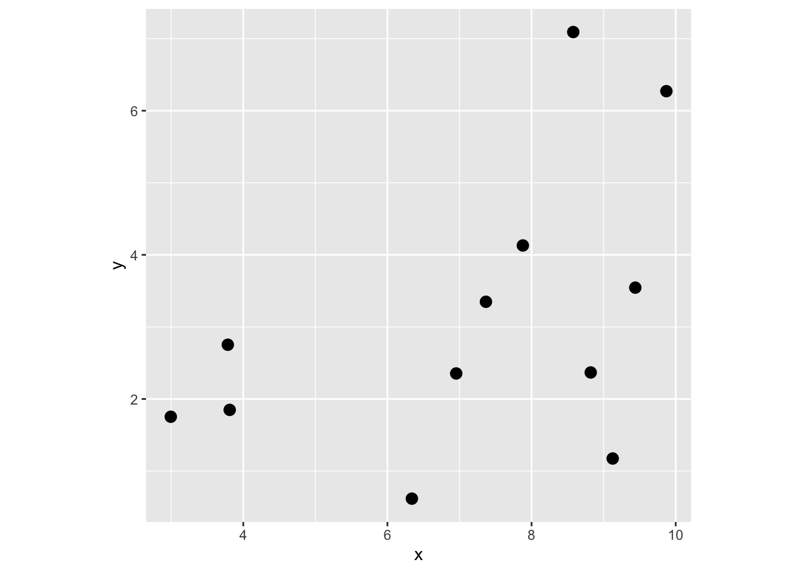
Get distance matrix D.
## 1 2 3 4 5 6 7 8
## 1 0.000000 4.042249 5.151871 2.760467 6.666510 7.5008999 3.8480931 4.883414
## 2 4.042249 0.000000 1.232544 1.329613 3.036986 5.0354400 1.7537952 1.866122
## 3 5.151871 1.232544 0.000000 2.391818 2.841567 5.3563727 2.7973459 2.471249
## 4 2.760467 1.329613 2.391818 0.000000 4.264086 5.8771898 2.0814470 2.755214
## 5 6.666510 3.036986 2.841567 4.264086 0.000000 2.8113862 2.9189494 1.842881
## 6 7.500900 5.035440 5.356373 5.877190 2.811386 0.0000000 3.8585149 3.182905
## 7 3.848093 1.753795 2.797346 2.081447 2.918949 3.8585149 0.0000000 1.077004
## 8 4.883414 1.866122 2.471249 2.755214 1.842881 3.1829050 1.0770040 0.000000
## 9 1.530579 4.730324 5.943570 3.650087 6.851253 7.0858240 3.9341398 5.008443
## 10 8.227390 5.858434 6.158515 6.689001 3.532465 0.8230520 4.6544658 4.005344
## 11 2.924195 1.998062 3.208562 1.666349 3.835780 4.6631092 0.9339861 2.002224
## 12 7.028896 5.049587 5.568488 5.708683 3.328806 0.9041729 3.6305504 3.193800
## 9 10 11 12
## 1 1.530579 8.227390 2.9241948 7.0288958
## 2 4.730324 5.858434 1.9980622 5.0495870
## 3 5.943570 6.158515 3.2085617 5.5684878
## 4 3.650087 6.689001 1.6663494 5.7086834
## 5 6.851253 3.532465 3.8357798 3.3288056
## 6 7.085824 0.823052 4.6631092 0.9041729
## 7 3.934140 4.654466 0.9339861 3.6305504
## 8 5.008443 4.005344 2.0022236 3.1938003
## 9 0.000000 7.725241 3.0433123 6.4652619
## 10 7.725241 0.000000 5.4320025 1.2744893
## 11 3.043312 5.432002 0.0000000 4.3188335
## 12 6.465262 1.274489 4.3188335 0.0000000Now, extract all the elements by combining the upper and lower triangles of the matrix,
i.e., all d_{ij} where i!=j
## [1] 4.0422488 5.1518709 1.2325435 2.7604666 1.3296135 2.3918180 6.6665100
## [8] 3.0369862 2.8415668 4.2640855 7.5008999 5.0354400 5.3563727 5.8771898
## [15] 2.8113862 3.8480931 1.7537952 2.7973459 2.0814470 2.9189494 3.8585149
## [22] 4.8834145 1.8661216 2.4712488 2.7552138 1.8428810 3.1829050 1.0770040
## [29] 1.5305785 4.7303243 5.9435699 3.6500874 6.8512531 7.0858240 3.9341398
## [36] 5.0084434 8.2273902 5.8584336 6.1585145 6.6890008 3.5324652 0.8230520
## [43] 4.6544658 4.0053441 7.7252407 2.9241948 1.9980622 3.2085617 1.6663494
## [50] 3.8357798 4.6631092 0.9339861 2.0022236 3.0433123 5.4320025 7.0288958
## [57] 5.0495870 5.5684878 5.7086834 3.3288056 0.9041729 3.6305504 3.1938003
## [64] 6.4652619 1.2744893 4.3188335 4.0422488 5.1518709 2.7604666 6.6665100
## [71] 7.5008999 3.8480931 4.8834145 1.5305785 8.2273902 2.9241948 7.0288958
## [78] 1.2325435 1.3296135 3.0369862 5.0354400 1.7537952 1.8661216 4.7303243
## [85] 5.8584336 1.9980622 5.0495870 2.3918180 2.8415668 5.3563727 2.7973459
## [92] 2.4712488 5.9435699 6.1585145 3.2085617 5.5684878 4.2640855 5.8771898
## [99] 2.0814470 2.7552138 3.6500874 6.6890008 1.6663494 5.7086834 2.8113862
## [106] 2.9189494 1.8428810 6.8512531 3.5324652 3.8357798 3.3288056 3.8585149
## [113] 3.1829050 7.0858240 0.8230520 4.6631092 0.9041729 1.0770040 3.9341398
## [120] 4.6544658 0.9339861 3.6305504 5.0084434 4.0053441 2.0022236 3.1938003
## [127] 7.7252407 3.0433123 6.4652619 5.4320025 1.2744893 4.3188335Make vector of radii to look at K. Because the data range from 0 to 10 on both axes I’ll look at radii from 0 to 2.5.
Now let’s loop through and calc K. And plot r against K. We will add the theoretical K under CSR too as pir^2
Kr <- numeric()
for(i in 1:length(r)){
Kr[i] = (area/(n * (n-1))) * sum(Dvec <= r[i])
}
p1 <- ggplot() +
geom_line(aes(x=r,y=pi*r^2),color="red", linetype="dashed") +
geom_line(aes(x=r,y=Kr),color="blue",linewidth=1) +
labs(y="K(r)",x="r")
p1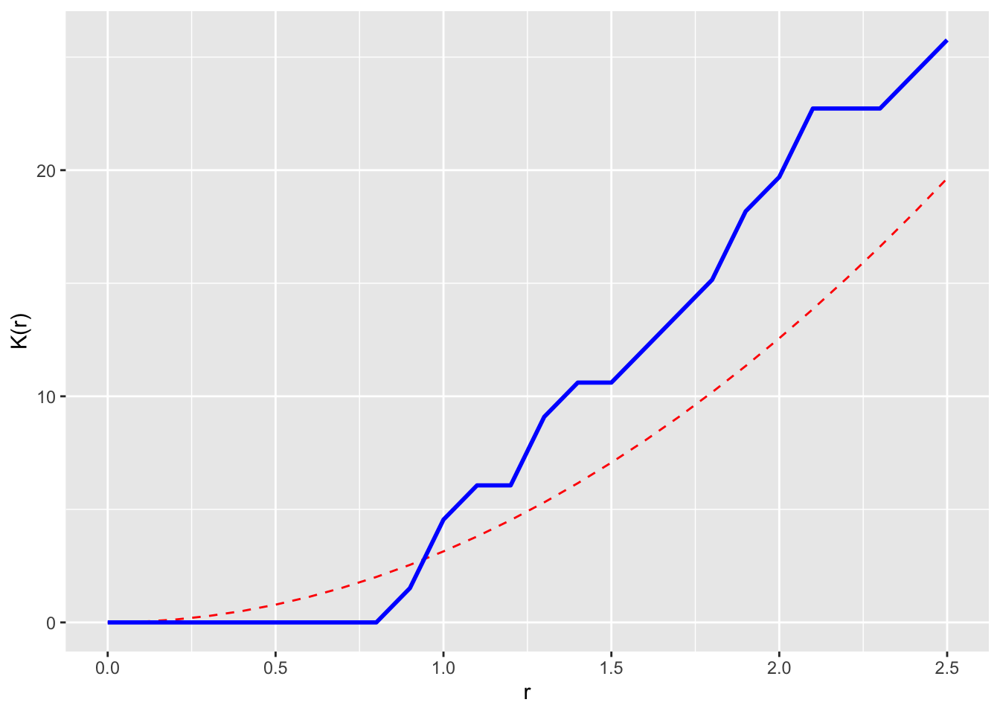
Cool. That’s it. But we can check this against the Kest function in spatstat as well.
## Planar point pattern: 12 points
## window: rectangle = [0, 10] x [0, 10] unitsxyK <- Kest(xy,r=r,correction = "none")
# match
p1 + geom_line(data=xyK,mapping = aes(x=r,y=un),linetype="dashed",color="white")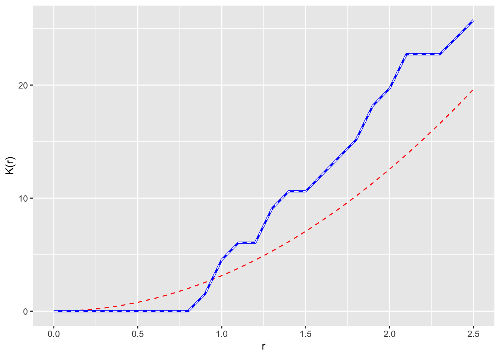